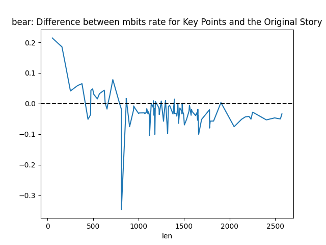
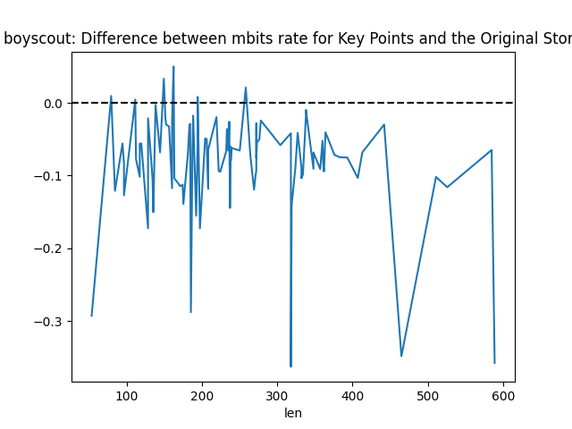
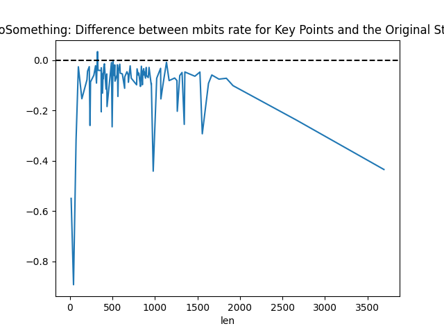
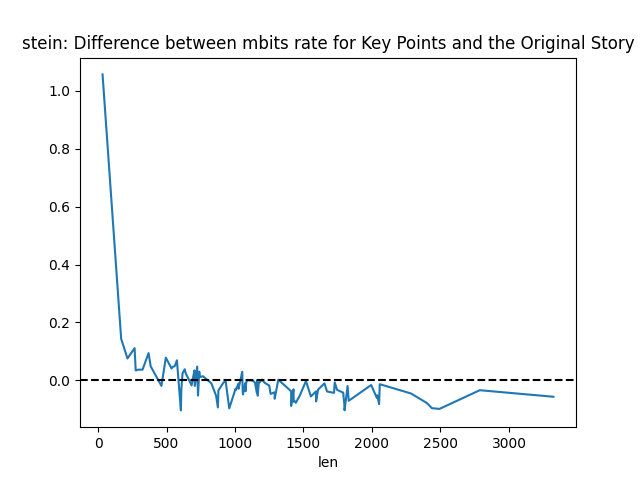

Difference between Mbits rate for key points and real narrative
Bear

- Narrator met three friends in college in 1949, knew them from high school athletics.
- All four attended the same college and became good friends.
- Friends enjoyed hunting on the narrator's farm, despite narrator's lack of interest in hunting.
- Group decided to go bear hunting in Canada, which the narrator reluctantly joined.
- They flew to Canada, canoed, and backpacked to a remote cabin for the hunt.
- Once at the cabin, none were eager to hunt due to the spooky surroundings.
- They played cards for days, avoiding the bear hunt.
- Faced with returning home without a bear, they decided to draw cards to choose a hunter.
- Narrator drew the high card and had to go bear hunting alone.
- Encountered a large bear, forgot to load the gun, and had to run back to the cabin.
- Led the bear into the cabin, escaped, and left the bear for friends to deal with.
- The event occurred thirty years prior to the telling of the story.
- Narrator fulfilled the commitment, but was never asked to go hunting again.
Boy Scout

- Narrator was in the boy scouts participating in a 50-yard dash at the pier.
- During the third race, the narrator caught cramps and started yelling for help.
- The other scouts thought the narrator was pretending in order to catch up and ignored him.
- The scoutmaster also saw the narrator in distress but did not react.
- A bystander who had just arrived at the scene noticed the narrator and rescued him.
Costa
- The narrator's daughter, Marie, died 28 years ago on the 30th of the month after an appendectomy.
- Marie was still under the effects of ether when the hospital staff attempted to get her out of bed, leading to complications.
- The narrator blames the hospital for a blood clot that developed after Marie was prematurely moved.
- Marie was preparing to be discharged from the hospital when she suddenly fell ill and passed away.
- The narrator was informed of Marie's discharge and was bringing her clothes when she found out about her daughter's condition.
- Marie experienced a sudden pain in her leg and an inability to see before collapsing, which was later attributed to a blood clot.
- The narrator became hysterical upon learning of her daughter's death and refused to let the hospital perform an autopsy.
- The death of Marie caused a great shock to the family, leading to the narrator's husband and son experiencing heart attacks.
- The entire neighborhood was affected by Marie's death, remembering her as a quiet and pleasant girl.
Do Something

- Narrator was driving to a church league softball game at Homestead High School.
- While turning onto Twenty-four near Ranch Eggs, a man in his fifties blocked the lane.
- The man started to follow the narrator's car closely, appearing to be unable to maintain his lane.
- The narrator suspected the man was either drunk or experiencing a medical emergency.
- At a stop sign, the narrator saw a sheriff's car and reported the man's erratic driving.
- Upon noticing the narrator talking to the police, the man stopped his car and began reversing away.
- The police pursued the man, who then drove slowly and carefully.
- The narrator was unsure if the police eventually stopped the man.
Hester v1 Park

- Narrator was 21, living in a small apartment and started a job as a graphic designer
- Narrator's father was recovering from surgery and used a wheelchair
- Father was cared for by a neighbor during the day as the narrator's sister was away at college
- Narrator felt a strong intuition to pray for father's recovery in a nearby park during lunch break
- Narrator found a quiet spot under a big oak tree and said a prayer for father's recovery
- Narrator received a text from father stating he had taken a few steps with his walker
- Father's recovery improved significantly after the prayer, regaining most mobility within a year
- Six or seven years later, the father can walk without assistance and enjoys life in his seventies
Hester v2 Church
- Narrator was 22 years old, fresh out of college, and working at a local bookstore.
- Narrator's grandpa was bedridden for almost a year, cared for by the narrator's sister.
- Narrator's parents were out of town for the weekend.
- Narrator heard a voice suggesting to light a candle at the old church for grandpa's health.
- Narrator was not religious but remembered grandma's words about the power of sincere prayer.
- Narrator prayed for grandpa's healing in the church.
- Narrator felt an urge to go home and found grandpa had recovered enough to sit and talk.
- Grandpa's recovery began that day and he regained strength and independence.
- The incident changed the narrator's perspective on faith and prayer.
- Grandpa lived to celebrate his ninetieth birthday and passed away years later.
- The experience remains a vivid memory for the narrator and continues to inspire faith.
Panic

- The narrator was working on the warehouse floor stocking and organizing merchandise.
- The narrator felt lightheaded and attributed it to hunger from not eating that day.
- The narrator experienced chest tightness, heart pounding, and difficulty breathing.
- The narrator started seeing spots and sweating profusely.
- The warehouse manager noticed the narrator's distress and approached to help.
- The narrator was unable to speak and was on the verge of collapsing.
- The manager caught the narrator before they fell and provided assistance.
- The narrator was taken to the staff room, given water, and allowed to rest.
- The incident was identified as a panic attack.
- The experience taught the narrator the importance of self-care to prevent future episodes.
Schissel v1 Pool

- Friend pushed narrator into a pool to avoid a bee sting
- Incident occurred at a cousin's wedding reception
- Narrator was dressed formally and holding a glass of champagne
- Friend acted without thinking and caused the narrator to fall into water
- Narrator's dress was ruined as a result
- Narrator had to dry off after being submerged
- Cousin joked about the proximity to the wedding cake
Schissel v2 Lake

- Best friend pushed narrator into a lake during a summer camping trip
- Incident occurred while trying to catch a frog at their favorite spot in the woods
- Narrator was initially uninterested in catching the frog and was eating a sandwich
- Friend did not accept refusal and pushed the narrator into the water
- After emerging from the water, the friend caught the frog and handed it to the narrator
- Narrator found the situation funny and laughed uncontrollably
- Narrator planned to seek revenge on the friend
Stein

- The family moved to Third and Wharton and experienced a violent welcome.
- The narrator's father, who drank, left to return the horses and did not come home.
- The narrator's mother went to the market, leaving the narrator with the siblings.
- Their house was stoned by locals, prompting the narrator to protect the siblings and seek their mother.
- The narrator, at ten years old, found their mother shopping in a Jewish neighborhood.
- A policeman informed them that the Irish neighborhood was hostile to black people and suggested they move.
- The mother, educated and assertive, refused to be intimidated and sought help from the police station.
- The police were unable or unwilling to provide protection, advising the family to move instead.
- The mother insisted on accountability from the real estate agent and refused to move due to lack of funds.
- The police eventually took the family home in a patrol wagon, attracting neighborhood attention.
- The mother addressed the gathered crowd, asserting her right to provide a home for her family.
- The family stayed for the month as they had paid rent, with the mother challenging the locals to fund their move if they wanted them gone.
- The father fell ill, and the neighbors showed kindness during the family's time of need.
Stein Final

Triplett v1 Rookie

- Narrator was a rookie in the police force with a fitness enthusiast background
- Police Chief was a veteran with a history of bravery and catching a notorious criminal
- Chief's young daughter was trying to impress the narrator
- Narrator found the Chief's daughter to be a chatterbox and wasn't fond of her
- Chief's daughter threatened to run away due to her father's scolding about the narrator
- Chief confronted the narrator at his apartment about his daughter's message
- Narrator and Chief agreed to search for the daughter together
- They found her scarf near a park but initially couldn't locate her
- Daughter was found at the police station, not having run away
- Deputy Frank Mitchell warned the narrator to transfer because the Chief never forgets
- Narrator decided to transfer and leave at the end of the rookie year
Triplett v2 Cat Lady

- Mrs. Baker was known as the cat lady with at least twenty cats
- Mrs. Baker's grandson was trying to befriend the narrator
- The narrator did not like the grandson due to his poor manners
- The grandson left a note threatening to run away because of nagging about the narrator
- Mrs. Baker and the narrator searched for the grandson near the old mill
- They found the grandson in the treehouse, not having run away
- Officer Dawson warned the narrator to stay out of sight as Mrs. Baker never forgets